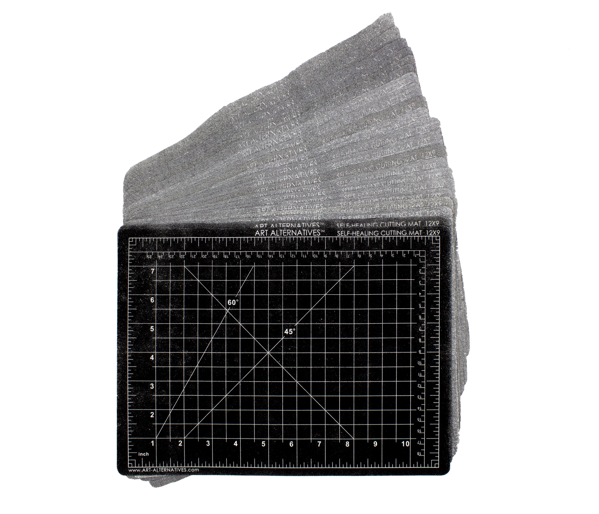
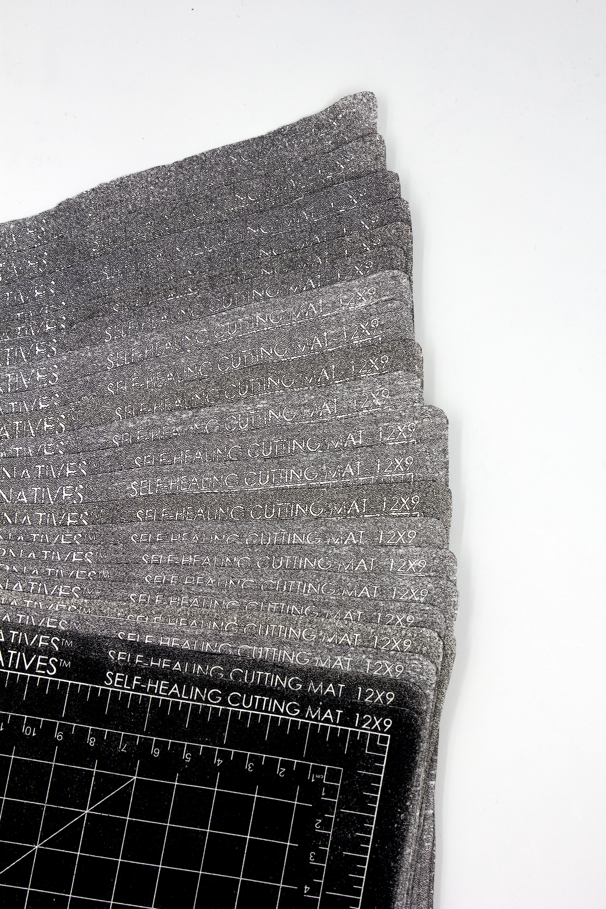
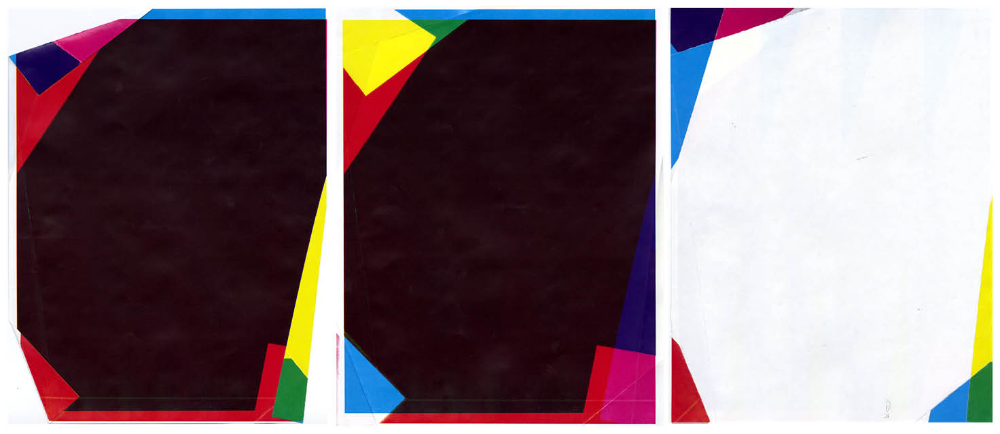
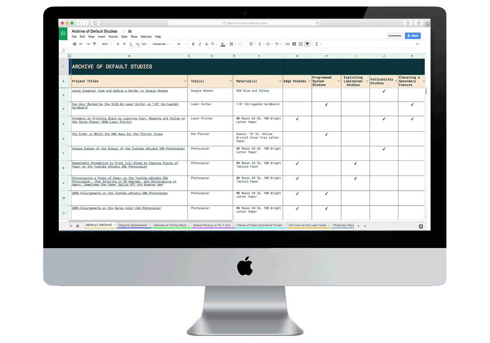

Archive of Default Studies
This website collects and categorizes my studies into the default settings of tools frequently used by designers: laser printers, photocopiers, projectors, scanners, laser cutters, Google spreadsheets, pen plotters and print-on-demand services. By exhaustively testing the defaults over the course of 11 studies, I disorient myself to their intended use to discover formal anomalies and traces of the human decisions that went into making these tools.
Created during an independent study with Clement Valla.
Fall 2017.

Unique Copies of the Output of the Toshiba eStudio 306 Photoshopier
Over the course of over 300 copies, the photocopier warps and enlarges the image, while also adding a unique texture.


Attempts at Printing Black Using Only Cyan, Magenta, and Yellow on the Xerox Phaser 7800 Laser Printer
In print, the color black is made by using cyan, magenta, and yellow. I decided to distill this process, by printing each color one at a time in every possible combination of the three colors. All six prints are accompanied with the instructions to recreate the print.

Using an iPhone SE Camera to Show the RGB Color Wheel Used to Project the Color White through a DLP Projector
The camera allows the viewer to see what the naked eye cannot: a spinning color wheel of red, green, and blue. Because of how quickly the color wheel spins, the human eye compiles this RGB into white. However, the frame rate of the camera allows the three colors to be seen individually.

200% Enlargements on the Toshiba eStudio 306 Photocopier
This study begins with a solid shape, which I photocopy at 200% enlargement, then take the resulting print and photocopy again at 200%. Quickly, a fractal pattern begins to reveal itself as I realize that this pattern is like the photocopier's DNA and I cannot ever zoom in far enough to find a blank page.
